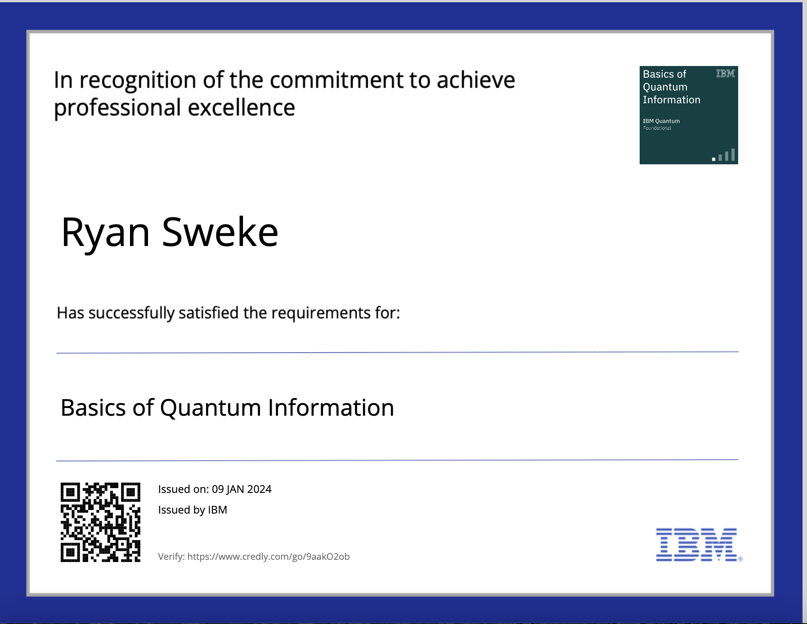

Overview
This week we will see an overview of the foundations of quantum information theory and quantum computing. To do this, we will follow closely learning resources provided by IBM Quantum. In particular, we will complete the "Basics of Quantum Information" course, and explore some material from the "Fundamentals of Quantum Algorithms" course.
More specifically, we will do the following:
Assignments
1. Your first task is to earn the badge for the "Basics of Quantum Information" course, by passing the exam at the end of the course. To access the exam you will need to register for an IBMid with your name and AIMS email address, and to receive the badge you will have to register an account with credly (following the instructions once you have earned the badge). Ask me if you have a problem with this! To receive marks for this task, you will need to submit a screenshot of your badge certificate, which looks like this:

2. In addition to earning the badge, you are required to submit either a detailed written explanation or explicit calculation (whenever necessary) for every one of your answers in the exam.
3. If you click on the links for each lecture above, you will see that each lecture comes with a variety of code examples in Qiskit which illustrate the concepts in the lecture. You are also required to submit a Jupyter notebook for each of the first four lectures, showing that you have succesfully run all the code examples. Take your time, play around with the examples, and make sure you understand them - because fluency in Qiskit is going to be important in Week 2!
Deadline: Friday 12th January at 9pm.
Submission Instructions: You should submit a single LaTex document which contains (1) a screenshot (like the one shown above) with proof that you earned the badge for the "Basics of Quantum Information" course, as well as (2) clearly written explanations or detailed calculations for each answer in the exam. In addition, you should submit four jupyter notebooks, one for each of the first four lectures. The first cell of the notebook should contain your name, and the title of the lecture
Bonus. We will only cover one of the four lessons in the "Fundamentals of Quantum Algorithms" course. If you are interested in quantum algorithms, I highly suggest that you go through this course by yourself. You will receive bonus points for the course if by the end of the three week module you submit a one page LaTeX document which explains either Grover's algorithm, or Shor's algorithm in your own words.